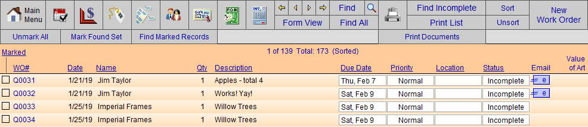
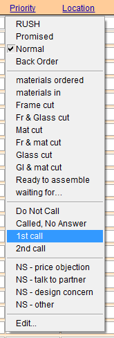

Call List
When orders are completed, make sure that customers know when they should come in and pickup their framing. Each shop should have a system or process (e.g. email, 3 calls, letter, registered letter) in place. Whatever your policy or procedure is, you can set it up in FrameReady.
How to Manage a Call List
Click the Find Incomplete Work Orders button.

Use the Status or Priority Fields
-
Use the Status field (form view) or Priority field (list view) to store your process steps (add yours directly below the standard FrameReady entries).
-
Do not remove the FrameReady entries, i.e. RUSH, Promised, etc.
-
Use the hyphen character - to create a line to separate the two groups.

Email Button
-
Use the Email icon button to send a pre-scripted email message to each customer. See also: Set up Completion Email Message
-
You can also add your own personal message before sending, e.g. So glad we went with the blue mat, it looks great!
-
After sending an email, switch to list view and change the Priority field to Sent Email .
-
At a glance, customers who have been reached and those who need to be contacted can be easily seen in the list view.
Telephone Calls
-
You can make your calls from the Form View, of the Work Order screen, where you can easily see the Phone number and Status fields.
-
Update the status (in the Priority field) after making the call.
-
Use the yellow arrows in the navigational palette to move to the next record (or switch to list view and select the next line item).
Advanced Documentation
-
To make more detailed notes, click the Contacts icon (in the navigational palette). This will take you directly to the current customer’s record and you can make more detailed notes under the Date/Notes tab. When you are finished entering the note, click the Work Order icon to go directly back to your list of records to call.
-
If you are using the Contact file to store your notes, then you may only want to have a simplified listing on the Work Order screen.
Tips
-
If you want to make your searches easier, add 1st call , 2nd call , etc. to your list for use in the Find screen. Now you can find all people who have received their first call and need a second call.
-
You can also include the Sales Rep (Order Taken By) field in your search on the Work Order Screen. This can help to build rapport as the person who took the order can remember details about the design process and what was important to the customer.
-
What portions you use and how you use the areas available are completely up to you.
© 2023 Adatasol, Inc.